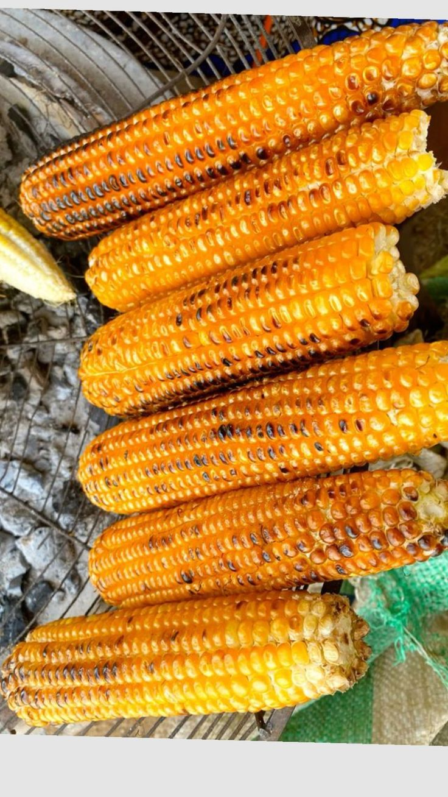
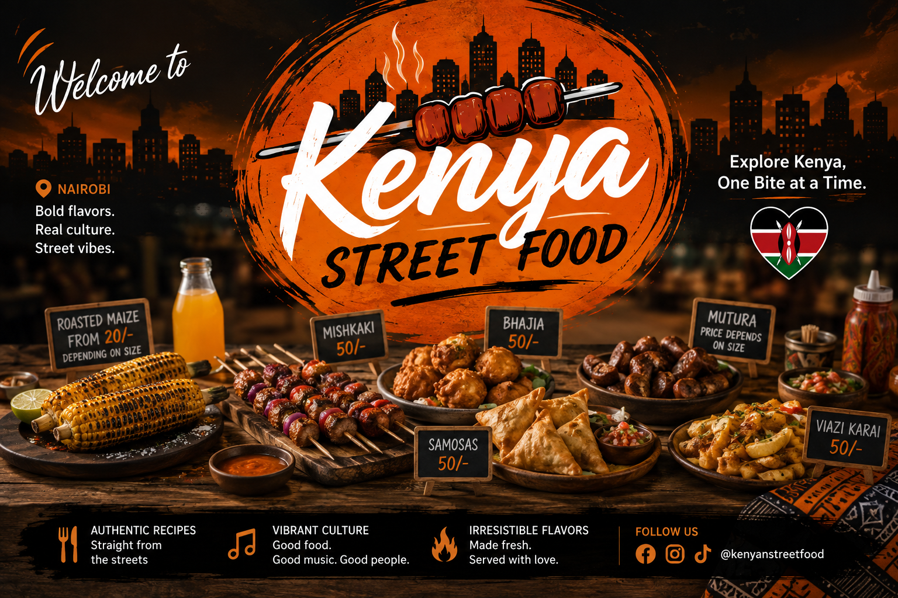

Experience authentic Kenyan flavours—from smoky grilled delights to crispy local favourites.
Explore FoodsFreshly prepared, full of flavour, and loved across Kenya.

Fresh maize roasted over charcoal and enjoyed with lemon and chilli.
Learn MoreExplore the vibrant colours and flavours of Kenya's street food culture.

Kenyan street food is more than just a quick meal—it's a celebration of culture, community, and unforgettable flavours. From the smoky aroma of grilled mshikaki to the crispy delight of bhajia and the sweetness of mahamri, every bite tells a story passed down through generations.
This website is dedicated to showcasing the rich diversity of Kenya's street food culture while inspiring people around the world to discover and appreciate these delicious local favourites.
We'd love to hear from you. Send us a message below.